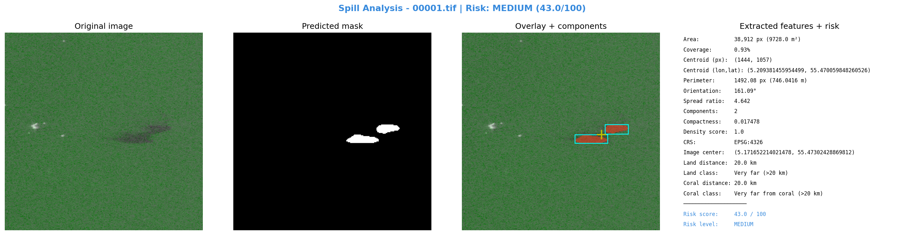

CRS: EPSG:4326
مركز الصورة: lon=5.171652214021478, lat=55.47302428869812
مركز التسرب: lon=5.209381455954499, lat=55.470059848260526
التاريخ: 2023-01-13 20:46:07
التحليل البصري

التقرير
**تقرير تحليل تسرب نفطي باستخدام صور الأقمار الاصطناعية SAR**
١. الملخص التنفيذي
تم تحليل صورة الأقمر الصناعي SAR لتحديد موقع ووصف التسرب النفطي. تم تحديد موقع التسرب في (5.209381455954499, 55.470059848260526) في تاريخ 13 يناير 2023 الساعة 20:46.
٢. الموقع الجغرافي والتاريخ
* نظام الإحداثيات: EPSG:4326
* مركز الصورة: (5.171652214021478, 55.47302428869812)
* مركز التسرب: (5.209381455954499, 55.470059848260526)
* التاريخ: 13 يناير 2023 الساعة 20:46
٣. الوصف الهندسي للتسرب
* المساحة: 38,912 بكسل (9728.0 م²)
* نسبة التغطية: 0.93%
* المحيط: 1492.08 بكسل (746.0416 م)
* مركز البقعة (بكسل): (1444, 1057)
٤. القرب من اليابسة والشعب المرجانية والأثر البيئي
* المسافة من اليابسة: 20.0 كم
* التصنيف: Very far (>20 km)
* المسافة من الشعب المرجانية: 20.0 كم
* التصنيف: Very far from coral (>20 km)
٥. تقييم الخطورة
* Risk Score: 43.0 / 100
* Risk Level: MEDIUM
* العوامل:
+ coverage 0.93% → MINIMAL (<2%) | spread_ratio 4.642 → MEDIUM (2-5) | components 2 → MEDIUM | density 1.0 → CRITICAL | land 20.0 km → LOW | coral 20.0 km → LOW
٦. التوصيات
* توصية 1: إجراء دراسة تفصيلية لتحديد حجم والتأثيرات البيئية للتسرب.
* توصية 2: اتخاذ تدابير فورية لمنع انتشار التسرب وتقليل الأثر البيئي.
* توصية 3: توفير الدعم اللازم للمجتمعات المحلية المتأثرة بالتسرب.
٧. الملاحظات
* يُحتاج إلى مزيد من التحليل والدراسة لتحديد الأسباب ورسم خارطة طريق للتصحيح.
* يجب اتخاذ إجراءات فورية لمنع انتشار التسرب وتقليل الأثر البيئي.